Formosan Harmony is an immersive Mixed Reality (MR) experience part of the Moondream Reality interactive theater (link). The project explores the cultural landscape and harmonious coexistence of different eras in Taiwan, blending physical site-specific interactions with digital storytelling. It combines both large scale projection + Microsoft Hololens 2 to create an immersive storytelling that gives the users an unique experience. Formosan Harmony also supports up to 20 players simultaneously for a unified playthrough that can interact with each other and share their experience together.
As Art Director, I led the creation of the MR visual language, ensuring that digital overlays felt naturally integrated into the physical exhibition space. I supervised the 3D asset creation, spatial lighting, and UI design to facilitate an intuitive and magical user experience.
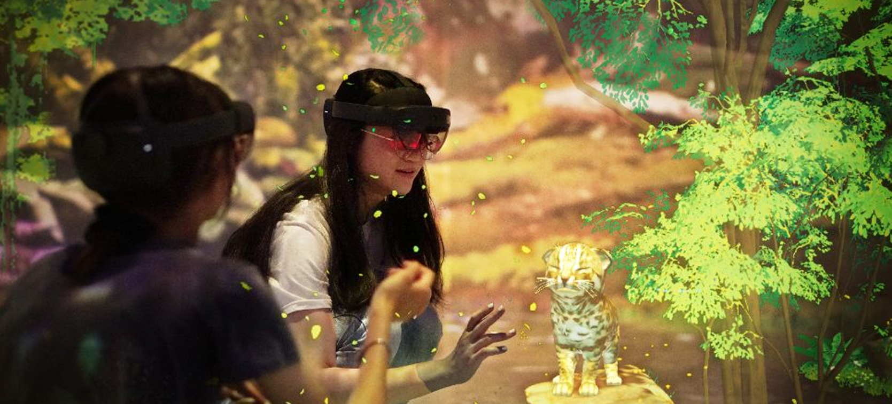
The visual direction focused on "magical realism"— enhancing real-world environments with ethereal, glowing elements that represent Taiwan embracing nature (through 5 projection planes). We paid close attention to transparency and color depth to ensure digital elements felt solid and present.
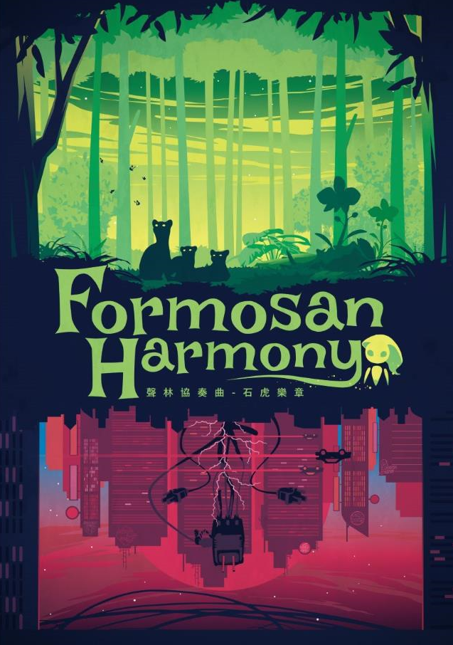
The key art that I created for Formosan Harmony. It is featured as poster or media material for this experience. The arts was created in Adobe Illustrator for better print quality. The concept shows a strong contrast of two different world that can both represent Taiwan. Green for nature that harbours life such our protagonist the 'Leopard cat family'. I choosed a simple and strong silhouette art style to represent forest/city, so the focus of idea will not be distracted from the details and the message or feeling can be communicated. The final version was iterated a few times as it was modified based on our Director's input.
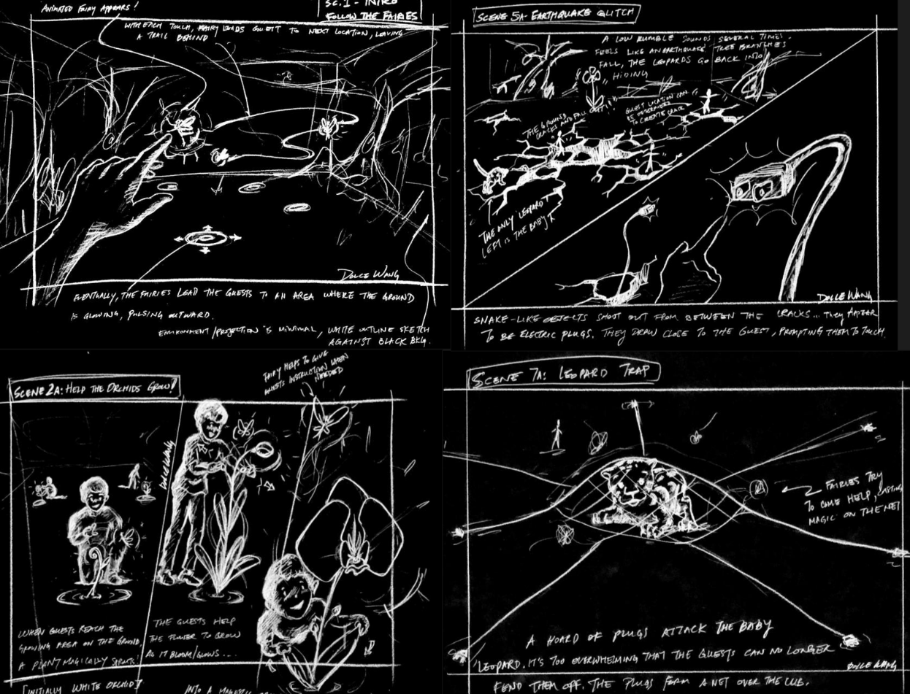
Hololens
When presented with simple storyboard from our Director depicting ideas for the 30 minutes runtime full of animation, effects, interactions, puzzles and music soundtracks. As art director for the job, the initial challenge is to figure out how the art team can realistically recreate every ideas and concepts to the final thing. As everything has to be realised on our targeted hardware 'MS Hololens 2', which essentially has the power similar to a phone. So, I was fully aware of the limitation and have to figure out
a pipeline/standard/method so we can smoothly create everything under hardware budget.
All models have to be low-poly, textures needs to be combined, and minimal joints for our animated objects, and the animation needs to be 30 fps as 60 fps will be too taxing. Our shader was optimized for Hololens for best performance even after we've customized and added a lot of features onto it for effects purposes (dissolve, transition, glows etc).
We also have to work closely with our programming team to plan our loading/unloading of each asset in our scene so we can free up the memories for sequencing shots. The particles was the bottleneck for our effect artists as Hololens does not have a powerful GPU that we can utilize so we are using CPU effects most of the time. Those are the challenges even before we are talking about interactions, multiplayers and sounds.
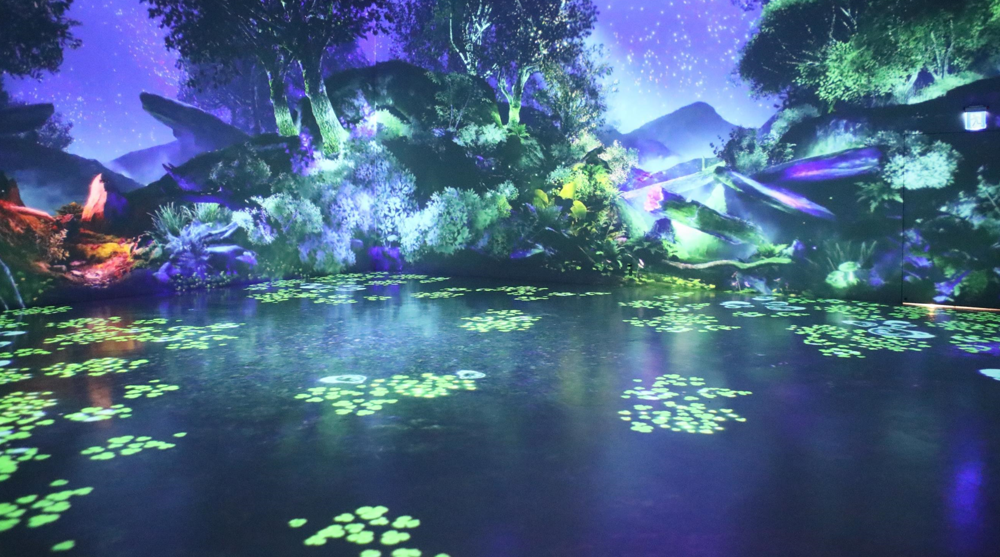
Projection
Because of the required immersive projection, we have two sepaprate Unity projects handling different part of the scene/assets. One for everything displayed on Hololens and one that's being projected on to the wall by 5 different laser projectors. Here is the three major projection scene we created. Each scene requires 4 full HD parallax camera and 1 4k orthographic camera projecting the floor. Because we are handling projections with good graphic cards PC (3080), which allows us to utilize the HDRP in unity for pushing the best graphic fidelity. Magic Forest is the lobby and first scene for the opening experience. We decided it needs to gives a magical bioluminascent feeling for our players. So there are many bright color used to simulate the feeling, it was created by our in-house artist Pei.
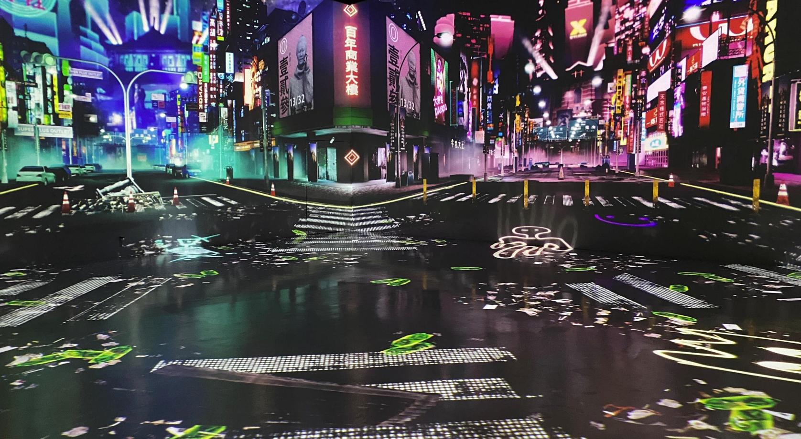
Crazy City is the second scene that depicted the busy street of Taipei. The challenges is to create a busy city with hundreds of 3D assets and buildings while maintain a consistent art style with previous scene. This scene was created by our in-house artist Howie.
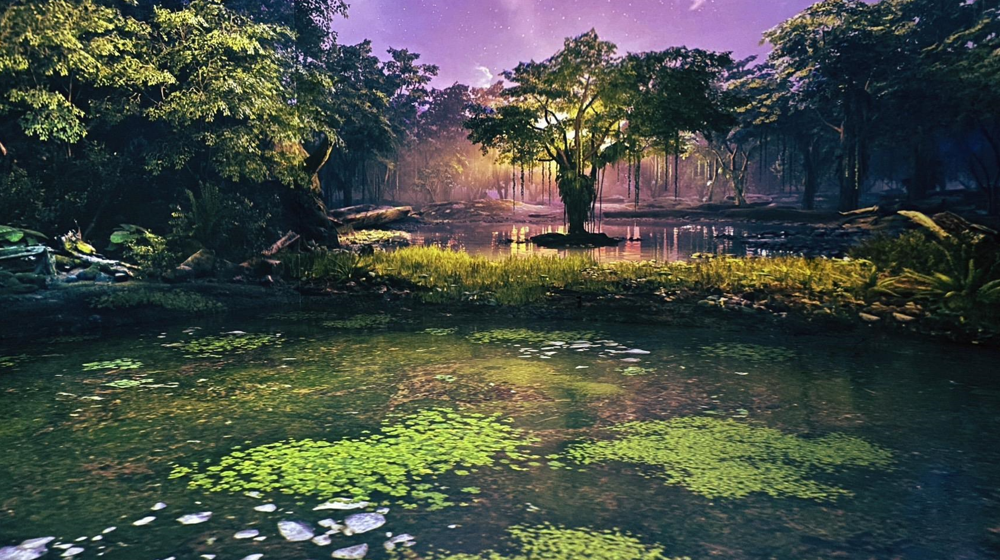
Golden Forest is the final act and scene for the show. It bears the message of showing the revitalising power of nature and harmonies that provides to the animals which live in it. I created and designed this scene to give the player a sense of hope with the rising sun and beautiful lush forest. This is the photo of the actual projection from the room, and as you can see, with proper use of camera you can hardly see the scene between walls and floor.
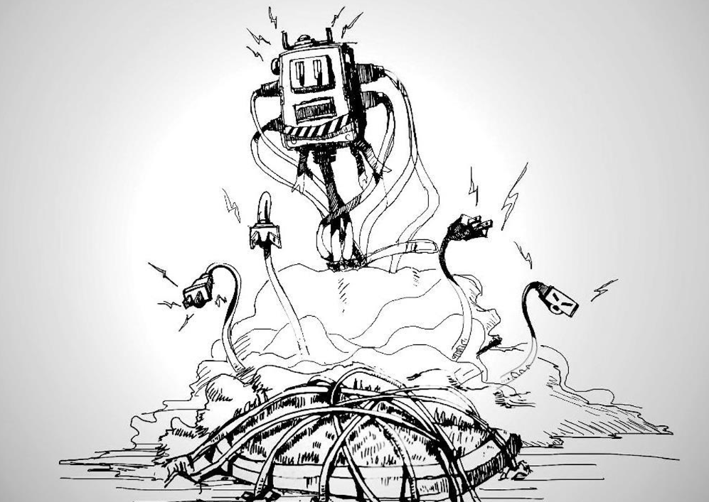
Character Concepts. Here is the examples of few character concepts from early sketches and drawing into the final rendered concept arts. As art director, I was tasked with designing the Plug Boss and Forest Spirit.
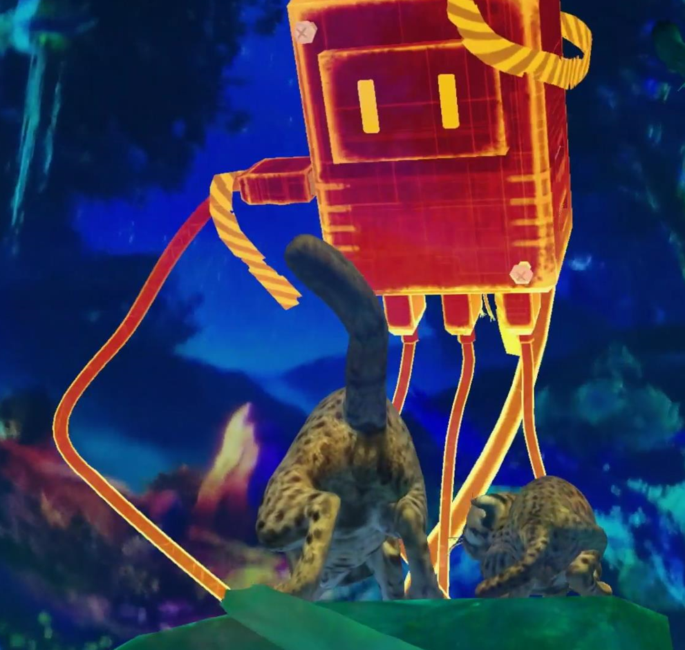
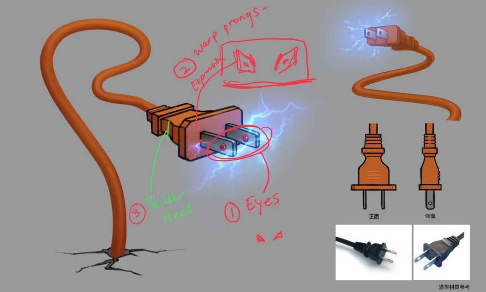
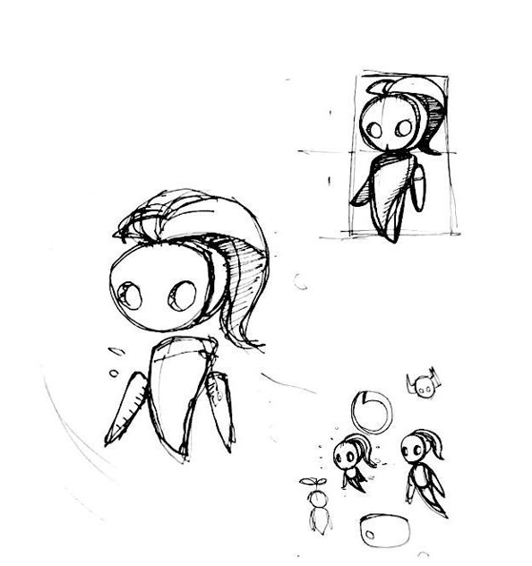
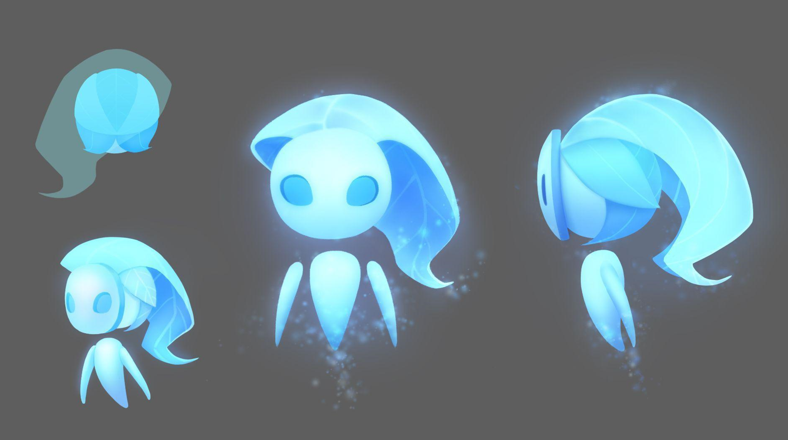
Looking back, I think this is the most challenging content that we as a team worked on. Not only it was really testing the art team to produce something that works within the constraint of the hardware to its limits (this content is something that the world hasn't done before). And also the programming team for ironing out all the technical challenges such as hololens positioning (it's a nightmare to have proper positioning as the wall projection needs to be specifically designed so it wouldn't mess with hololens's targeting and positioning), multiplayer device syncing, projection mapping, and Raddar setting for wall interactivity, not to mention we also included an ipad version for people who could not wear Hololens. It's an amazing team effort and I am proud of working on it and it will always have a special place in my heart.
Role: Art Director
Type: Mixed Reality (MR) / Interactive Theater
Year: 2022
Studio: Moonshine Studio
Tools & Tech: Unity Engine, Varjo / Meta Quest MR Pro, Adobe Creative Suite
{kind=link}
{kind=link}
{kind=link}
{kind=link}